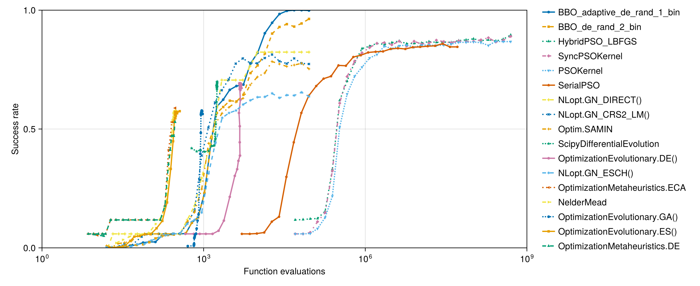
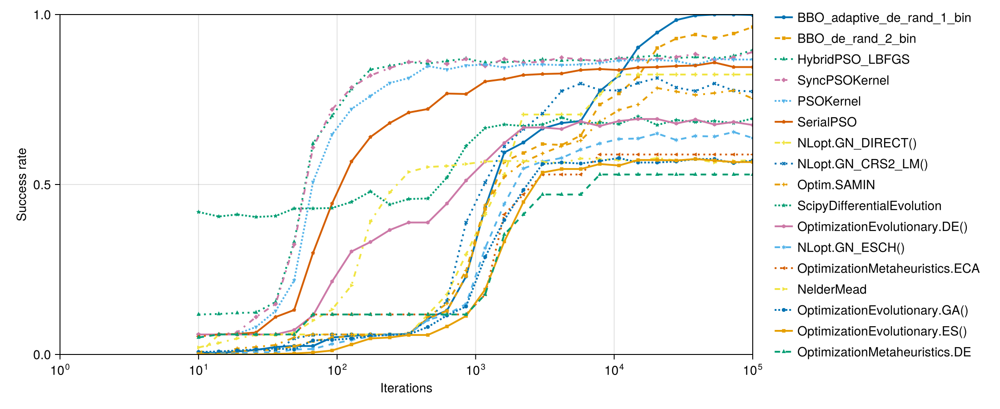
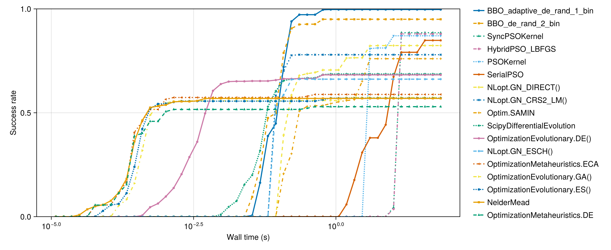
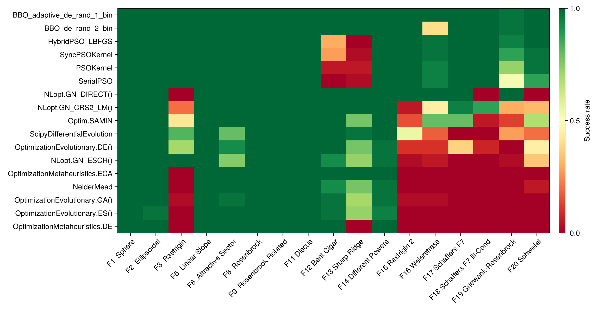
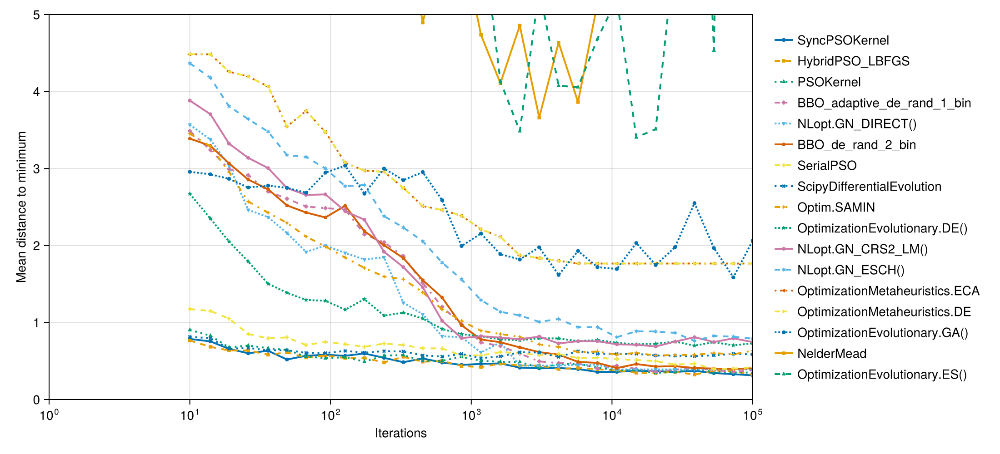
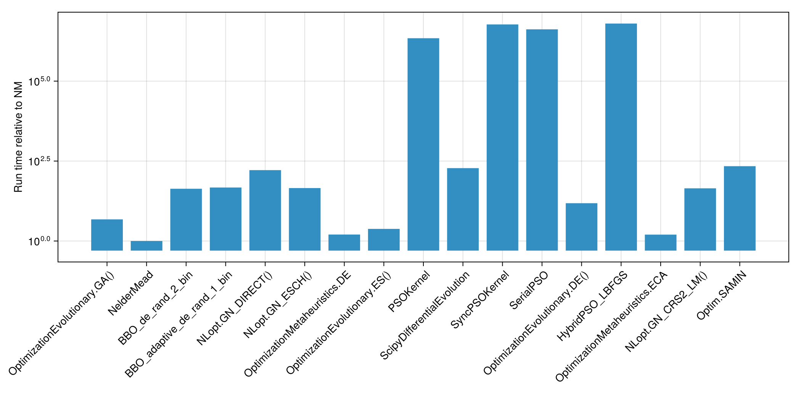

PSO Global Optimizer Benchmarks
This benchmark evaluates Particle Swarm Optimization (PSO) variants from ParallelParticleSwarms.jl against established global optimizers on the BlackBoxOptimizationBenchmarking.jl suite (v2 API), using the Optimization.jl interface.
Setup
using Random
Random.seed!(42)
using BlackBoxOptimizationBenchmarking, CairoMakie, Optimization, Memoize, Statistics
CairoMakie.activate!()
import BlackBoxOptimizationBenchmarking: Chain, BenchmarkSetup, BenchmarkResults,
BBOBFunction, FunctionCallsCounter, solve_problem, pinit, compute_CI
const BBOB = BlackBoxOptimizationBenchmarking
using OptimizationBBO, OptimizationOptimJL, OptimizationEvolutionary, OptimizationNLopt
using OptimizationMetaheuristics, OptimizationSciPy
using ParallelParticleSwarms
using ForwardDiff
using KernelAbstractions
using CUDA
using StaticArrays, LinearAlgebra
const PSOKernel = ParallelParticleSwarms.ParallelPSOKernel
const SyncPSOKernel = ParallelParticleSwarms.ParallelSyncPSOKernel
const SerialPSOAlgorithm = ParallelParticleSwarms.SerialPSO
const HPso = ParallelParticleSwarms.HybridPSO
const BACKEND = CUDABackend()CUDA.CUDAKernels.CUDABackend(false, false)const MK_MARKERS = [:circle, :rect, :utriangle, :diamond, :dtriangle, :pentagon,
:cross, :xcross, :star4, :star5, :hexagon, :star6, :ltriangle, :rtriangle]
const MK_LINESTYLES = [:solid, :dash, :dot, :dashdot, (:dot, :dense)]
function solve_problem_baseline(optimizer::Union{Chain, BenchmarkSetup}, f, D::Int,
run_length::Int)
solve_problem(optimizer, f, D, run_length)
end
function benchmark_time_to_success(
optimizer::Union{Chain, BenchmarkSetup}, funcs::Vector{<:BBOBFunction};
Ntrials::Int = 15, dimension::Int = 3, Δf::Real = 1e-6, max_run_length::Int = 100_000
)
all_times = Float64[]
for f in funcs
for _ in 1:Ntrials
t0 = time()
sol = solve_problem_baseline(optimizer, f, dimension, max_run_length)
elapsed = time() - t0
push!(all_times, sol.objective < Δf + f.f_opt ? elapsed : Inf)
end
end
return all_times
end
benchmark_time_to_success(optimizer, funcs::Vector{<:BBOBFunction}; kwargs...) =
benchmark_time_to_success(BenchmarkSetup(optimizer), funcs; kwargs...)
function success_rate_cdf(all_times::Vector{Float64}, time_thresholds::AbstractVector{Float64})
N = length(all_times)
return [count(x -> x <= t, all_times) / N for t in time_thresholds]
endsuccess_rate_cdf (generic function with 1 method)_to_f64(x::Real) = Float64(x)
_to_f64(x::ForwardDiff.Dual) = Float64(ForwardDiff.value(x))
_to_f64(x) = Float64(x[])
_value(x::Real) = x
_value(x::ForwardDiff.Dual) = ForwardDiff.value(x)
_penalty(x) = eltype(x) <: ForwardDiff.Dual ? zero(first(x)) + 1.0f10 : 1.0f10
function pso_objective(f::BBOBFunction, x)
any(xi -> !isfinite(_value(xi)) || abs(_value(xi)) > 15, x) && return _penalty(x)
y = f(x)
y isa ForwardDiff.Dual ? y : Float32(y)
end
function _pso_problem(f::BBOBFunction, D::Int; x0 = nothing)
optf = OptimizationFunction{false}((x, p) -> pso_objective(f, x), Optimization.SciMLBase.NoAD())
lb = SVector{D, Float32}(ntuple(_ -> -5.0f0, Val(D)))
ub = SVector{D, Float32}(ntuple(_ -> 5.0f0, Val(D)))
x0 = x0 === nothing ?
SVector{D, Float32}(ntuple(_ -> -5.0f0 + rand(Float32) * 10.0f0, Val(D))) :
SVector{D, Float32}(x0)
OptimizationProblem{false}(optf, x0, nothing; lb, ub)
end
function pso_solve(opt, f::BBOBFunction, D::Int, maxiters::Int;
local_maxiters::Int = 50, x0 = nothing)
prob = _pso_problem(f, D; x0)
if opt isa HPso
solve(prob, opt; maxiters, local_maxiters, abstol = 1.0f-8, reltol = 1.0f-8)
else
solve(prob, opt; maxiters)
end
end
function _extract_u(sol, D)
u = sol.u
u isa SVector && return u
u isa AbstractVector && return SVector{D}(u)
u[]
end
function pso_benchmark(opt, funcs, run_length;
Ntrials = 15, dimension = 3, local_maxiters = 50, Δf = 1e-6, CI_quantile = 0.25,
n_particles = 1)
Nf = length(funcs); Nr = length(run_length)
success = zeros(Float64, Nf, Nr)
dist = zeros(Float64, Nf, Nr)
fmin = zeros(Float64, Nf, Nr)
t0 = time()
for (fi, f) in enumerate(funcs)
xopt = SVector{dimension, Float32}(f.x_opt[1:dimension])
for (ri, rl) in enumerate(run_length)
hits = 0; dsum = 0.0; fsum = 0.0
for _ in 1:Ntrials
sol = pso_solve(opt, f, dimension, rl; local_maxiters)
u = _extract_u(sol, dimension)
fval = _to_f64(sol.objective)
hits += abs(fval - f.f_opt) < Δf ? 1 : 0
dsum += Float64(norm(u .- xopt))
fsum += fval - f.f_opt
end
success[fi, ri] = hits / Ntrials
dist[fi, ri] = dsum / Ntrials
fmin[fi, ri] = fsum / Ntrials
end
end
elapsed = time() - t0
Neff = Ntrials * Nf
sr = vec(mean(success, dims = 1))
sc = vec(sum(success .* Ntrials, dims = 1)) .|> round .|> Int
ci = BBOB.compute_CI(sr, Neff, CI_quantile)
BenchmarkResults(
run_length = collect(run_length),
success_count = sc,
success_rate = sr,
success_rate_qlow = ci.success_rate_qlow,
success_rate_qhigh = ci.success_rate_qhigh,
distance_to_minimizer = vec(mean(dist, dims = 1)),
minimum = vec(mean(fmin, dims = 1)),
runtime = elapsed,
Neffective = Neff,
callcount = Float64.(run_length) .* n_particles,
success_rate_per_function = [success[fi, end] for fi in 1:Nf],
)
end
function pso_tts(opt, funcs; Ntrials = 15, dimension = 3, Δf = 1e-6,
local_maxiters = 50, max_run_length = 100_000)
all_times = Float64[]
D = dimension
for f in funcs
for _ in 1:Ntrials
x0 = SVector{D, Float32}(ntuple(_ -> -5.0f0 + rand(Float32) * 10.0f0, Val(D)))
prob = _pso_problem(f, D; x0)
t0 = time()
sol = if opt isa HPso
solve(prob, opt; maxiters = max_run_length,
local_maxiters, abstol = 1.0f-8, reltol = 1.0f-8)
else
solve(prob, opt; maxiters = max_run_length)
end
elapsed = time() - t0
fval = _to_f64(sol.objective)
push!(all_times, abs(fval - f.f_opt) < Δf ? elapsed : Inf)
end
end
all_times
endpso_tts (generic function with 1 method)chain = (t; isboxed = false) -> Chain(
BenchmarkSetup(t, isboxed = isboxed),
BenchmarkSetup(NelderMead(), isboxed = false),
0.9)
dimension = 3
# Exclude unstable BBOB functions: f4 Buche-Rastrigin, f7 Step-Ellipsoidal (segfault),
# f10 Ellipsoidal-2 (illegal access).
test_functions = filter(f -> nameof(f.f) ∉ (:f4, :f7, :f10), BBOB.bbob_suite(Val(dimension)))
run_length = round.(Int, 10 .^ LinRange(1, 5, 30))
Ntrials = 40
num_particles = 5_000
const SUCCESS_Δf = 1e-6
PSO_KEYS = Set(["SerialPSO", "PSOKernel", "SyncPSOKernel", "HybridPSO_LBFGS"])
setup = Dict(
"NelderMead" => NelderMead(),
"NLopt.GN_CRS2_LM()" => chain(NLopt.GN_CRS2_LM(), isboxed = true),
"NLopt.GN_DIRECT()" => chain(NLopt.GN_DIRECT(), isboxed = true),
"NLopt.GN_ESCH()" => chain(NLopt.GN_ESCH(), isboxed = true),
"OptimizationEvolutionary.GA()" => chain(OptimizationEvolutionary.GA(), isboxed = true),
"OptimizationEvolutionary.DE()" => chain(OptimizationEvolutionary.DE(), isboxed = true),
"OptimizationEvolutionary.ES()" => chain(OptimizationEvolutionary.ES(), isboxed = true),
"Optim.SAMIN" => chain(SAMIN(verbosity = 0), isboxed = true),
"BBO_adaptive_de_rand_1_bin" => chain(BBO_adaptive_de_rand_1_bin(), isboxed = true),
"BBO_de_rand_2_bin" => chain(BBO_de_rand_2_bin(), isboxed = true),
"OptimizationMetaheuristics.ECA" => chain(OptimizationMetaheuristics.ECA(), isboxed = true),
"OptimizationMetaheuristics.DE" => chain(OptimizationMetaheuristics.DE(), isboxed = true),
"ScipyDifferentialEvolution" => chain(ScipyDifferentialEvolution(), isboxed = true),
"SerialPSO" => SerialPSOAlgorithm(512),
"PSOKernel" => PSOKernel(num_particles; backend = BACKEND, global_update = true),
"SyncPSOKernel" => SyncPSOKernel(num_particles; backend = BACKEND),
"HybridPSO_LBFGS" => HPso(pso = SyncPSOKernel(num_particles; backend = BACKEND); backend = BACKEND),
)
@memoize run_bench(algo) = algo in PSO_KEYS ?
pso_benchmark(setup[algo], test_functions, run_length;
Ntrials, dimension, Δf = SUCCESS_Δf,
n_particles = algo == "SerialPSO" ? 512 : num_particles) :
BBOB.benchmark(setup[algo], test_functions, run_length;
Ntrials, Δf = SUCCESS_Δf)
@memoize run_tts(algo) = algo in PSO_KEYS ?
pso_tts(setup[algo], test_functions;
Ntrials, dimension, Δf = SUCCESS_Δf, max_run_length = 100_000) :
benchmark_time_to_success(setup[algo], test_functions;
Ntrials, dimension, Δf = SUCCESS_Δf, max_run_length = 100_000)run_tts (generic function with 1 method)Test all (iterations)
labels = collect(keys(setup))
results = Array{BBOB.BenchmarkResults}(undef, length(setup))
for (i, algo) in enumerate(labels)
algo in PSO_KEYS || continue
results[i] = run_bench(algo)
@info "PSO success rate" algo success_rate = round(results[i].success_rate[end], digits = 3)
end
for (i, algo) in enumerate(labels)
algo in PSO_KEYS && continue
results[i] = run_bench(algo)
end
results17-element Vector{BlackBoxOptimizationBenchmarking.BenchmarkResults}:
BenchmarkResults :
Run length : [10, 14, 19, 26, 36, 49, 67, 92, 127, 174 … 5736, 7880, 1082
6, 14874, 20434, 28072, 38566, 52983, 72790, 100000]
Success rate : [0.00735294, 0.00882353, 0.0117647, 0.0147059, 0.0176471, 0.
0147059, 0.0411765, 0.0426471, 0.0470588, 0.0544118 … 0.561765, 0.569118,
0.577941, 0.564706, 0.564706, 0.567647, 0.575, 0.575, 0.563235, 0.570588]
BenchmarkResults :
Run length : [10, 14, 19, 26, 36, 49, 67, 92, 127, 174 … 5736, 7880, 1082
6, 14874, 20434, 28072, 38566, 52983, 72790, 100000]
Success rate : [0.0205882, 0.0338235, 0.0470588, 0.0573529, 0.0573529, 0.06
32353, 0.1, 0.132353, 0.202941, 0.391176 … 0.576471, 0.575, 0.572059, 0.5
69118, 0.577941, 0.570588, 0.575, 0.564706, 0.569118, 0.572059]
BenchmarkResults :
Run length : [10, 14, 19, 26, 36, 49, 67, 92, 127, 174 … 5736, 7880, 1082
6, 14874, 20434, 28072, 38566, 52983, 72790, 100000]
Success rate : [0.00294118, 0.00147059, 0.0102941, 0.0117647, 0.0147059, 0.
0235294, 0.0397059, 0.0485294, 0.0544118, 0.0558824 … 0.644118, 0.735294,
0.767647, 0.817647, 0.901471, 0.929412, 0.941176, 0.930882, 0.944118, 0.96
3235]
BenchmarkResults :
Run length : [10, 14, 19, 26, 36, 49, 67, 92, 127, 174 … 5736, 7880, 1082
6, 14874, 20434, 28072, 38566, 52983, 72790, 100000]
Success rate : [0.00588235, 0.00441176, 0.00882353, 0.0132353, 0.0220588, 0
.025, 0.025, 0.05, 0.0544118, 0.0588235 … 0.686765, 0.775, 0.820588, 0.90
2941, 0.947059, 0.983824, 0.997059, 1.0, 1.0, 0.998529]
BenchmarkResults :
Run length : [10, 14, 19, 26, 36, 49, 67, 92, 127, 174 … 5736, 7880, 1082
6, 14874, 20434, 28072, 38566, 52983, 72790, 100000]
Success rate : [0.0, 0.0588235, 0.0588235, 0.0588235, 0.0588235, 0.0588235,
0.0588235, 0.0588235, 0.0588235, 0.0588235 … 0.705882, 0.764706, 0.82352
9, 0.823529, 0.823529, 0.823529, 0.823529, 0.823529, 0.823529, 0.823529]
BenchmarkResults :
Run length : [10, 14, 19, 26, 36, 49, 67, 92, 127, 174 … 5736, 7880, 1082
6, 14874, 20434, 28072, 38566, 52983, 72790, 100000]
Success rate : [0.00147059, 0.00294118, 0.00294118, 0.00735294, 0.00588235,
0.0147059, 0.0161765, 0.0308824, 0.0426471, 0.0529412 … 0.602941, 0.6205
88, 0.633824, 0.635294, 0.65, 0.630882, 0.642647, 0.641176, 0.654412, 0.636
765]
BenchmarkResults :
Run length : [10, 14, 19, 26, 36, 49, 67, 92, 127, 174 … 5736, 7880, 1082
6, 14874, 20434, 28072, 38566, 52983, 72790, 100000]
Success rate : [0.05, 0.0588235, 0.0588235, 0.0588235, 0.0588235, 0.0588235
, 0.117647, 0.117647, 0.117647, 0.117647 … 0.470588, 0.529412, 0.529412,
0.529412, 0.529412, 0.529412, 0.529412, 0.529412, 0.529412, 0.529412]
BenchmarkResults :
Run length : [10, 14, 19, 26, 36, 49, 67, 92, 127, 174 … 5736, 7880, 1082
6, 14874, 20434, 28072, 38566, 52983, 72790, 100000]
Success rate : [0.00147059, 0.0, 0.0, 0.0, 0.00147059, 0.00294118, 0.005882
35, 0.0117647, 0.0294118, 0.0470588 … 0.545588, 0.560294, 0.555882, 0.572
059, 0.572059, 0.570588, 0.575, 0.570588, 0.566176, 0.566176]
BenchmarkResults :
Run length : [10, 14, 19, 26, 36, 49, 67, 92, 127, 174 … 5736, 7880, 1082
6, 14874, 20434, 28072, 38566, 52983, 72790, 100000]
Success rate : [0.0588235, 0.0588235, 0.0602941, 0.0808824, 0.127941, 0.217
647, 0.507353, 0.647059, 0.722059, 0.760294 … 0.852941, 0.857353, 0.86470
6, 0.864706, 0.866176, 0.863235, 0.851471, 0.869118, 0.867647, 0.867647]
BenchmarkResults :
Run length : [10, 14, 19, 26, 36, 49, 67, 92, 127, 174 … 5736, 7880, 1082
6, 14874, 20434, 28072, 38566, 52983, 72790, 100000]
Success rate : [0.419118, 0.405882, 0.411765, 0.404412, 0.407353, 0.429412,
0.429412, 0.430882, 0.448529, 0.479412 … 0.679412, 0.682353, 0.677941, 0
.7, 0.675, 0.689706, 0.683824, 0.686765, 0.680882, 0.694118]
BenchmarkResults :
Run length : [10, 14, 19, 26, 36, 49, 67, 92, 127, 174 … 5736, 7880, 1082
6, 14874, 20434, 28072, 38566, 52983, 72790, 100000]
Success rate : [0.0588235, 0.0588235, 0.0647059, 0.110294, 0.148529, 0.3235
29, 0.608824, 0.720588, 0.785294, 0.820588 … 0.867647, 0.863235, 0.870588
, 0.867647, 0.869118, 0.875, 0.883824, 0.866176, 0.873529, 0.889706]
BenchmarkResults :
Run length : [10, 14, 19, 26, 36, 49, 67, 92, 127, 174 … 5736, 7880, 1082
6, 14874, 20434, 28072, 38566, 52983, 72790, 100000]
Success rate : [0.0588235, 0.0588235, 0.0602941, 0.0647059, 0.110294, 0.130
882, 0.298529, 0.444118, 0.567647, 0.639706 … 0.836765, 0.839706, 0.83676
5, 0.844118, 0.845588, 0.848529, 0.85, 0.858824, 0.845588, 0.845588]
BenchmarkResults :
Run length : [10, 14, 19, 26, 36, 49, 67, 92, 127, 174 … 5736, 7880, 1082
6, 14874, 20434, 28072, 38566, 52983, 72790, 100000]
Success rate : [0.0588235, 0.0588235, 0.0588235, 0.0588235, 0.0588235, 0.07
20588, 0.114706, 0.214706, 0.302941, 0.330882 … 0.685294, 0.672059, 0.686
765, 0.692647, 0.692647, 0.679412, 0.691176, 0.676471, 0.683824, 0.675]
BenchmarkResults :
Run length : [10, 14, 19, 26, 36, 49, 67, 92, 127, 174 … 5736, 7880, 1082
6, 14874, 20434, 28072, 38566, 52983, 72790, 100000]
Success rate : [0.117647, 0.119118, 0.122059, 0.123529, 0.154412, 0.330882,
0.620588, 0.701471, 0.780882, 0.838235 … 0.866176, 0.864706, 0.872059, 0
.875, 0.879412, 0.872059, 0.875, 0.870588, 0.877941, 0.895588]
BenchmarkResults :
Run length : [10, 14, 19, 26, 36, 49, 67, 92, 127, 174 … 5736, 7880, 1082
6, 14874, 20434, 28072, 38566, 52983, 72790, 100000]
Success rate : [0.0529412, 0.0588235, 0.0588235, 0.0588235, 0.0588235, 0.05
88235, 0.117647, 0.117647, 0.117647, 0.117647 … 0.529412, 0.588235, 0.588
235, 0.588235, 0.588235, 0.588235, 0.588235, 0.588235, 0.588235, 0.588235]
BenchmarkResults :
Run length : [10, 14, 19, 26, 36, 49, 67, 92, 127, 174 … 5736, 7880, 1082
6, 14874, 20434, 28072, 38566, 52983, 72790, 100000]
Success rate : [0.00147059, 0.00147059, 0.00294118, 0.0161765, 0.00882353,
0.0470588, 0.0573529, 0.0588235, 0.0588235, 0.0588235 … 0.797059, 0.77794
1, 0.776471, 0.798529, 0.813235, 0.785294, 0.775, 0.797059, 0.776471, 0.773
529]
BenchmarkResults :
Run length : [10, 14, 19, 26, 36, 49, 67, 92, 127, 174 … 5736, 7880, 1082
6, 14874, 20434, 28072, 38566, 52983, 72790, 100000]
Success rate : [0.00882353, 0.00294118, 0.0176471, 0.0220588, 0.0279412, 0.
05, 0.0588235, 0.0588235, 0.0588235, 0.0588235 … 0.629412, 0.685294, 0.71
9118, 0.735294, 0.783824, 0.773529, 0.763235, 0.769118, 0.776471, 0.752941]Success Rate vs. Function Evaluations
labels = collect(keys(setup))
idx = sortperm([b.success_rate[end] for b in results], rev = true)
fig = Figure(size = (1100, 450))
ax = Axis(fig[1, 1]; xscale = log10, xlabel = "Function evaluations",
ylabel = "Success rate", limits = (1, 1e9, 0, 1))
for (j, i) in enumerate(idx)
scatterlines!(ax, results[i].callcount, results[i].success_rate;
label = labels[i], linewidth = 2, markersize = 6,
marker = MK_MARKERS[mod1(j, length(MK_MARKERS))],
linestyle = MK_LINESTYLES[mod1(j, length(MK_LINESTYLES))])
end
Legend(fig[1, 2], ax; framevisible = false)
fig
Success Rate vs. Iterations
labels = collect(keys(setup))
idx = sortperm([b.success_rate[end] for b in results], rev = true)
fig = Figure(size = (1100, 450))
ax = Axis(fig[1, 1]; xscale = log10, xlabel = "Iterations",
ylabel = "Success rate", limits = (1, 1e5, 0, 1))
for (j, i) in enumerate(idx)
scatterlines!(ax, results[i].run_length, results[i].success_rate;
label = labels[i], linewidth = 2, markersize = 6,
marker = MK_MARKERS[mod1(j, length(MK_MARKERS))],
linestyle = MK_LINESTYLES[mod1(j, length(MK_LINESTYLES))])
end
Legend(fig[1, 2], ax; framevisible = false)
fig
Test all (wall-clock time to success)
tts_results = Dict{String, Vector{Float64}}()
for algo in labels
algo in PSO_KEYS || continue
tts_results[algo] = run_tts(algo)
end
for algo in labels
algo in PSO_KEYS && continue
tts_results[algo] = run_tts(algo)
endSuccess Rate vs. Wall-Clock Time
labels = collect(keys(setup))
all_finite = filter(isfinite, vcat(values(tts_results)...))
time_thresholds = 10 .^ range(log10(minimum(all_finite) / 2),
log10(maximum(all_finite) * 2), length = 50)
cdfs = Dict(l => success_rate_cdf(tts_results[l], time_thresholds) for l in labels)
idx = sortperm([cdfs[l][end] for l in labels], rev = true)
fig = Figure(size = (1100, 450))
ax = Axis(fig[1, 1]; xscale = log10, xlabel = "Wall time (s)",
ylabel = "Success rate", limits = (nothing, nothing, 0, 1))
for (j, i) in enumerate(idx)
scatterlines!(ax, time_thresholds, cdfs[labels[i]];
label = labels[i], linewidth = 2, markersize = 6,
marker = MK_MARKERS[mod1(j, length(MK_MARKERS))],
linestyle = MK_LINESTYLES[mod1(j, length(MK_LINESTYLES))])
end
Legend(fig[1, 2], ax; framevisible = false)
fig
Success Rate per Function Heatmap
labels = collect(keys(setup))
success_rate_per_function = reduce(hcat, b.success_rate_per_function for b in results)
idx = sortperm(vec(mean(success_rate_per_function, dims = 1)), rev = false)
data = success_rate_per_function[:, idx]
fnames = string.(test_functions)
anames = labels[idx]
fig = Figure(size = (1150, 600))
ax = Axis(fig[1, 1]; xticks = (1:length(fnames), fnames),
yticks = (1:length(anames), anames), xticklabelrotation = π / 4)
hm = heatmap!(ax, 1:length(fnames), 1:length(anames), data;
colormap = :RdYlGn, colorrange = (0, 1))
Colorbar(fig[1, 2], hm; label = "Success rate")
fig
Distance to Minimizer vs. Iterations
labels = collect(keys(setup))
idx = sortperm([b.distance_to_minimizer[end] for b in results], rev = false)
fig = Figure(size = (1100, 500))
ax = Axis(fig[1, 1]; xscale = log10, xlabel = "Iterations",
ylabel = "Mean distance to minimum", limits = (1, 1e5, 0, 5))
for (j, i) in enumerate(idx)
scatterlines!(ax, results[i].run_length, results[i].distance_to_minimizer;
label = labels[i], linewidth = 2, markersize = 6,
marker = MK_MARKERS[mod1(j, length(MK_MARKERS))],
linestyle = MK_LINESTYLES[mod1(j, length(MK_LINESTYLES))])
end
Legend(fig[1, 2], ax; framevisible = false)
fig
Relative Runtime
labels = collect(keys(setup))
ref = findfirst(==("NelderMead"), labels)
runtimes = getfield.(results, :runtime)
runtimes = runtimes ./ runtimes[ref]
fig = Figure(size = (1050, 520))
ax = Axis(fig[1, 1]; yscale = log10, ylabel = "Run time relative to NM",
xticks = (1:length(labels), labels), xticklabelrotation = π / 4)
barplot!(ax, 1:length(labels), runtimes)
fig